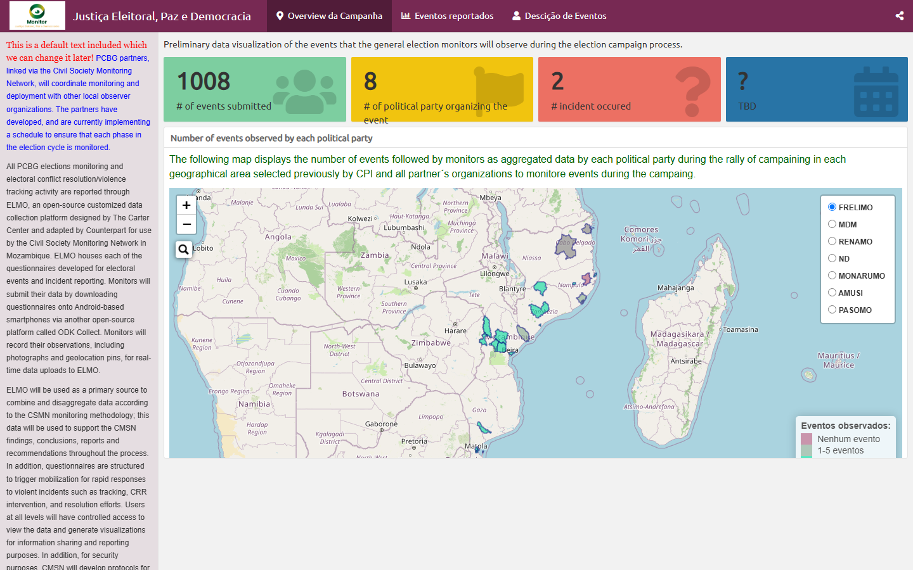

Justiça Eleitoral · 2019
Campaign Monitor
Election campaign events tracked by monitors — incidents by political party, mapped across Mozambique.
Open dashboard
Data Science · Biostatistics
I’m Antonio Rungo — Senior Strategic Information Advisor at mothers2mothers, working on HIV/PMTCT to help eliminate paediatric AIDS. Biostatistician who loves turning analysis into clear, dynamic visualization.
HIV/PMTCT Data Visualization Monitoring & Evaluation RStudio IA Automations Maputo, Mozambique
I am a biostatistician currently working as Senior Strategic Information Advisor. Previously I worked as an independent consultant and as an M&E advisor at an international non-governmental organization in Mozambique, focused on continuous quality improvement (CQI) — supporting internal Data Quality Assessments (iDQA) by implementing partners, providing technical assistance to the Ministry of Health, developing and delivering training materials, coordinating and aligning Global Programs activities through an M&E lens, and ongoing capacity building and mentorship for MOH and partner staff.
Earlier, I worked as a Voluntary Medical Male Circumcision (VMMC) project manager and data analyst, and as a database manager at the International Training and Education Center for Health (I-TECH) Mozambique office.
I have skills in developing and maintaining effective, up-to-date monitoring & evaluation and operational-research systems — ensuring implementation of programs and projects, designing data-entry screens, developing data-collection tools for operational research, and handling data analysis and research reporting.
Interactive election-monitoring dashboards — open the full report in a new view.


Have a project, a dataset, or just want to say hi? I'm always happy to talk data, dashboards and M&E.